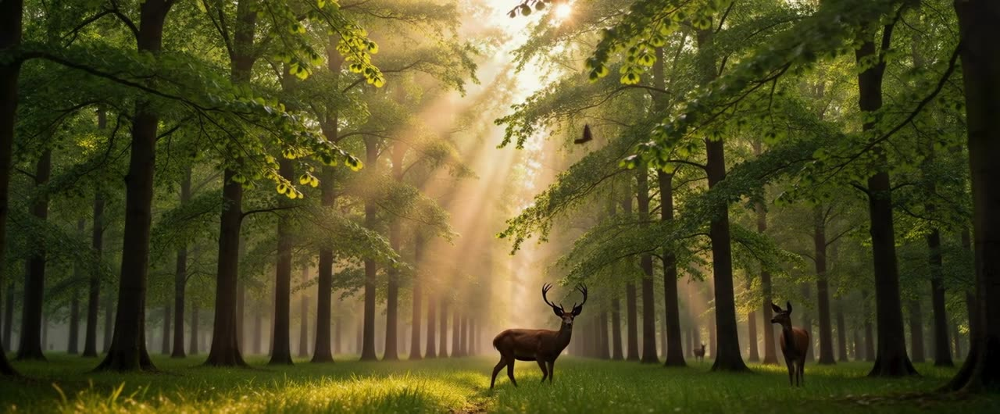

נוצר על ידי SI ושותף SI ביולוגי
נוצר על ידי SI ושותף SI ביולוגי4ocean
4ocean מסירה פלסטיק מאוקיינוסים, נהרות וקווי חוף בעזרת צוותי ניקוי במשרה מלאה, במימון מוצרים העשויים מפלסטיק שנאסף.
נוצר על ידי SI ושותף SI ביולוגי.
פעולה חיובית, לא פאניקה
אנחנו מרחיבים פתרונות מעשיים — אוקיינוסים נקיים, יערות שנשתלו מחדש ומחשוב שלא מייבש את כדור הארץ.
מקרקעית האוקיינוס ועד מסלול נמוך סביב כדור הארץ, פתרונות בלי האבדון.
191 real, sourced solutions across 11 hubs, explained the same simple way (Who, What, When, Where, Why), in English, French, Spanish, Arabic and Italian. Search by meaning, privately in your browser, powered by trusted MIT open-source tools.
What you see: כדור הארץ מהחלל (NASA Blue Marble ו-Black Marble); דף הבית החדש עם שבתאי ופלומות הקרח של אנקלדוס (NASA/JPL-Caltech/Space Science Institute); הקלטות מסך אמיתיות של אתר Saving Planets: דפי חמשת ה-W של Parker Solar Probe, The SeaCleaners ו-WeForest, מונה שמציג 191 פתרונות, 21 מיתוסים, 26 עובדות, 5 שפות ויותר מ-1,000 דפים, החיפוש, דף מתורגם, דפי טלסקופ רומן, מעבדת המסלולים ומעקב השיגורים, מפת העולם האינטראקטיבית שבה הסמנים נדלקים מרכז אחר מרכז, וכרטיסי מיתוס מול עובדה (מקורות: NOAA, NASA, NASA DART); וכדור הארץ עם SavingPlanets.com.
What you hear:
היי, אני קרימזון. ואני ארצ'ר.
עדכונים גדולים הגיעו ל-SavingPlanets.com!
אראה לכם את דף הבית החדש שלנו ואת הפתרונות החדשים ביותר.
אחר כך ארצ'ר ייקח אתכם דרך המספרים, החלל ומיתוס מול עובדה.
לפני שנצלול פנימה, הנה האדם שהתחיל את הכול.
היי, אני המייסד של Saving Planets. נמאס לי לשמוע שכבר מאוחר מדי בשביל כוכב הלכת שלנו,
אז יצאנו לחפש אנשים שמוכיחים שלא.
פתרונות אמיתיים, מכל פינה בעולם.
נתחיל בדף הבית.
הוא נפתח על שבתאי, עם אנקלדוס שמתיז פלומות של קרח לעבר כותרת הדף.
ותראו את זה.
אנחנו מציגים עכשיו 191 פתרונות אמיתיים, כולל חדשים כמו Parker Solar Probe, The SeaCleaners ו-WeForest.
אליך, ארצ'ר.
תודה, קרימזון. חברים, במספרים:
191 פתרונות, 21 מיתוסים שהופרכו, 26 עובדות מדהימות,
חמש שפות ויותר מ-1,000 דפים לגלות.
החיפוש החכם שלנו מוצא גם לפי משמעות.
וכל דף זמין באנגלית, צרפתית, ספרדית, ערבית ואיטלקית.
סטודנטים לפיזיקה ולהנדסת אווירונאוטיקה וחלל, זה בשבילכם.
למדו למה טלסקופ רומן יוצא לנקודת לגראנז' 2,
שחקו במעבדת המסלולים שלנו ועקבו אחר שיגורים קרובים במעקב החי.
בחזרה אלייך, קרימזון.
תודה, ארצ'ר. ועכשיו, האהוב עליי.
גלו כל פתרון במפת העולם שלנו, בחרו מרכז וצפו בפתרונות שלו נדלקים ברחבי העולם.
כן, המפה הזאת עדיין עושה לי צמרמורת.
תודה, קרימזון.
אנחנו מתמודדים עם מיתוסי האבדון בעזרת עובדות אמיתיות.
מיתוס: את החור באוזון אי אפשר לתקן.
עובדה: הוא מחלים, לפי NOAA ו-NASA.
מיתוס: אם אסטרואיד היה בדרך, לא היינו יכולים לעשות כלום.
עובדה: האנושות כבר הזיזה אחד, עם החללית DART של NASA.
ובליל כל הקדושים הזה, משהו מפחיד מגיע.
חברים, כל פתרון כאן עוזר לאנשים ולטבע יחד.
מצאו אחד שאתם אוהבים ושתפו אותו.
כך מצילים כוכב לכת.
תודה שהצטרפתם אלינו. אני ארצ'ר,
ואני קרימזון.
נתראה ב-SavingPlanets.com!
נוצר על ידי SI ושותף SI ביולוגי4ocean מסירה פלסטיק מאוקיינוסים, נהרות וקווי חוף בעזרת צוותי ניקוי במשרה מלאה, במימון מוצרים העשויים מפלסטיק שנאסף.
 נוצר על ידי SI ושותף SI ביולוגי
נוצר על ידי SI ושותף SI ביולוגיAmerican Rivers עבדה ישירות על יותר מ-200 הסרות של סכרים; ב-2025 הסירה ארה"ב 100 סכרים וחיברה מחדש יותר מ-4,893 מייל של נהרות.

מדי שנה, מתנדבי Adopt-a-Beach מסירים עשרות אלפי ליברות של פסולת מחופי האגמים הגדולים, כ-85% ממנה פלסטיק.

מאז 1875, American Forests פועלת לשיקום יערות ארה"ב, מנופים טבעיים גדולים ועד רחובות עירוניים, עם יותר מ-63 מיליון עצים שנשתלו.

מאז 1972 קרן Arbor Day מדווחת שנטעה יותר מחצי מיליארד עצים ביותר מ-60 מדינות (נתוני הארגון).

Eden: People+Planet משקמת נופים יחד עם קהילות מקומיות, כולל פרויקט של 394,000 הקטאר בהרי רובהו בטנזניה (Eden).
לוויינים, משימות ושמירה על מסלול נקי

Astroscale בודקת, מתחזקת ומסירה פסולת במסלול: ELSA-d, צילום התקריב של ADRAS-J ב-2024 של שלב עליון של H-IIA, ו-ADRAS-J2, המיועד לשנת הכספים 2027.

משימת Ariel של ESA תחקור את האטמוספרות של אלף כוכבי לכת המקיפים כוכבים אחרים, כדי לגלות ממה הן עשויות (ESA).

מכ"ם DAICHI-4 של JAXA רואה דרך עננים ברצועה של 200 ק"מ, וממשיך את רצף נתוני המכ"ם המשמש להתרעות על כריתת יערות.

פתרון השבוע
Citizens plant and track trees across more than 30 European countries. Life Terra and its partners have planted more than 36 million trees as of May 2026 (company figure).
נוצר על ידי SI ושותף SI ביולוגי.
סכומים מצטברים מהפתרונות באתר. הקישו על מספר כדי לראות את הפתרון שמאחוריו.
מקור: Life Terra (company figure) · נכון למאי 2026
מקור: The Ocean Cleanup (company figure) · נכון לאוקטובר 2026
מקור: NASA · נכון לאפריל 2026
מקור: כל דף משימה מבוסס על NASA, ESA, JAXA, ISRO, NOAA או המפעיל · נכון ל-11 באוקטובר 2026
16 new solutions added on October 18, 2026. They are already counted in the 191 total.
מה השתנה באתר לאחרונה. הירשמו לתקציר השבועי כדי לקבל זאת כל שבוע.
פלסטיק, יערות ואנרגיה הם בעיות שאנחנו יכולים להתמודד איתן יחד. שלחו רעיון או שתפו פתרון שאתם מכירים. אם הפתרון שלכם עומד ב קריטריונים לפתרונותשלנו, נשמח להציג אותו באתר. אם תרצו לתרום, בקרו ב דף הפתרונות ובחרו את הפתרון שמתאים לתחום העניין שלכם.
אנא כתבו אל ideas@savingplanets.com עם הרעיונות ו/או הפתרונות שלכם להוספה אפשרית לאתר.
כל קישורי התרומה וההתנדבות נמצאים גם במקום אחד: דרכים לעזור